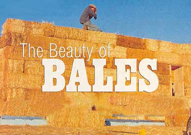
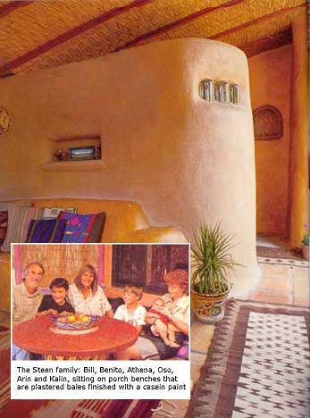
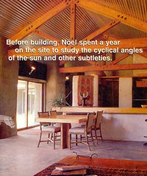
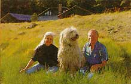
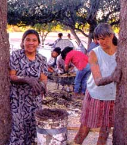
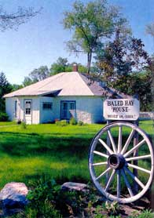
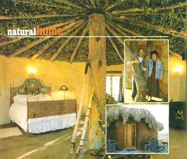
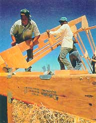

It wasn't long after the appearance of baling machines in the 1850s that straw and hay bales began to be considered a building material. Historical patents for bale walls date back to the 1880s in Indiana. The first significant use of bales as a building material occurred in the Sandhills of Nebraska, a vast tract of desolate, grass covered hills. An abundance of wild grasses, combined with the lack of timber and good building soils, provided incentives to devise new building techniques using unconventional materials. The oldest bale building on record is a school built in Scott's Bluff County in 1886 or '87. Ultimately, the school was devoured by cattle.
Although many houses built from natural materials are beautiful, the use of such materials does not guarantee beauty. We have seen many straw bale houses that appear no different than any other building. When incorporated into conventional construction, natural materials are subjugated to the same stresses and patterns. Straw bale walls can rapidly become a very insignificant part of the whole house. We once asked a friend how she liked her new house; she responded, "I really wanted a straw bale home, but what I got was a house with straw bales in the walls."
Bales used for building should be dense and compact, capable of supporting a substantial amount of weight without changing shape or deforming. The strings should be tight, holding the bale securely together. Most importantly, straw used for building should be bright golden-yellow with no signs of discoloration, which indicates moisture damage. Simply put, you should only use bales that have been kept out of the weather.
R -value means "resistance value," using a rating system for measuring the relative capacity of insulating materials to resist heat transfer.
The first R -value tests of straw bales were conducted on individual bales by Joe McCabe; he achieved results that ranged on average, depending on the size and orientation of the bale, from R-40 to R-50. Later tests conducted on whole wall assemblies of straw bales got lower results: Oak Ridge National Laboratories had R-31.2, while the California Energy Commission adopted a value of R-30 based on testing conducted by Nehemiah Stone. These results were disappointing to those who thought that the tests for wall assemblies, including allowances for losses, would be similar to results for individual bales. However, the same disparity holds true for other materials. For example, 2x6 framed walls that are nominally rated at R-19 only achieved whole-wall ratings of R-12.8 at Oak Ridge, even with properly installed insulation (it often is not). By these terms, straw bale walls compare very impressively.
It's also very important to remember that laboratory tests are conducted under steady state conditions. In the real world, consistent conditions rarely exist for more than a minute or two. The true test of any material is the amount of energy required, over time, to maintain a reasonable level of comfort. Rather than measuring just R-values, it is essential to consider the overall contributions of a wall's thickness and the thermal mass provided by interior and exterior coatings. Together, these provide comfort and thermal performance much greater than R-value alone would indicate.
Straw is a magnificent building material that can provide increased levels of comfort and aesthetic appeal, but it must be kept dry. Likewise, good indoor air quality depends on healthy walls. Fungal growth and mold can result in severe health problems.
1. Avoid building moisture into the walls.
Build only with bales that have always been kept dry. Bales that have gotten wet and then later dried out should not be used because straw fibers easily deteriorate during the drying-out process. If possible, build the structure and roof first.
2. Reduce exposure to rain.
Driving rain is responsible for many of the moisture problems that occur in all types of buildings. Keeping water off the walls will greatly reduce potential problems.
• Select a site that is sheltered by natural features and not subject to strong winds and driving rains.
• If possible, plant trees and shrubs as windbreaks, and use other screens.
• Good site drainage around the perimeter of a building is needed to direct surface runoff away.
• Roofs need generous overhangs. Wrap-around porches are even better than eaves for rain protection.
• The top of the foundation should be a minimum of eight inches above grade, and exterior stucco or plaster should also stop well above grade. Protection from rain splash-back at the base of walls is essential.
• Gutters with downspouts can prevent roof runoff from falling near the base of walls and then blowing back against the walls.
• Use water-repellent coatings that are also vapor-permeable on exterior stucco and plaster to prevent absorption of rainwater. Siloxane is one product that meets these criteria.
• Provide good window detailing, using head, jamb and sill flashing, sloped sills and drip edges to shed water away from the wall.
• Flash and/or caulk all joints between different materials to prevent unwanted intrusion of moisture or critters.
• Use berms to reduce the impact of snow, rain and wind.
3. Avoid the use of vapor barriers.
Vapor flows from warm to cold, and walls need the ability to dry. Since drying predominantly occurs through vapor diffusion, an impermeable barrier or coating can be detrimental. The vapor permeance or perm rating of both interior and exterior wall finishes needs to be chosen with due regard for each specific climate. Otherwise, vapor can be trapped within the wall, where it will condense. A general recommendation would be to make the finish on the warmer side of the wall semipermeable so that it slows the flow of vapor in the wall, while the finish on the cooler side of the wall should be permeable so that vapor can flow through.
Vapor permeability is typically rated in "perms":
Impermeable materials = one perm and less.
Cement stucco (one part cement, three parts sand) = 0.5 to 1.0 perms.
Semipermeable materials = one to six perms.
Cement lime stucco (one part cement, one part lime, six parts sand) = four to six perms.
Permeable materials = from six to more than 50 perms.
Lime plaster (one part lime, three parts sand) = eight to 12 perms.
4.Provide a "continuous" air barrier to block leaks.
Air flow or leakage occurs through openings (holes, cracks, etc.), and can carry 100 times more moisture than what might be generated by vapor diffusion through the wide expanse of wall and ceiling surfaces. Improperly sealed joints at penetrations in the ceiling, floor and wall junctions, as well as cracks around windows, doors and electrical boxes, are common problems. A continuous air barrier strategy relies on good detailing and a variety of materials to be effective. The stucco and plaster skins typically used on straw bales play an important part in establishing this continuous barrier.
5. Protect the bales from moisture at their connection with the foundation.
Keep the bales above floor level, with raised sills or toed-up foundations, to help prevent damage from plumbing leaks and minor floods. The tops of foundations also need to be moisture-proofed: install a capillary break between the foundation and wall structure to prevent wicking of moisture up into the bales.
6. Monitor the walls for moisture.
You can make your own moisture meters following instructions in issue 22 of The Last Straw Journal, page 114 [(505) 895-5400, www.strawhomes.com ] Moisture can be monitored either by checking moisture content or relative humidity. Straw that is under 15 percent in moisture content and lower than 75 percent in relative humidity can be considered sound and unaffected by moisture.
Noel Bennett's House
Located at an elevation of 8,000 feet on a beautiful and remote site in the Jemez mountains of northern New Mexico, this passive solar, infill straw bale house was built by Noel Bennett and her late husband Jim Wakeman, with design help from architect Michael McGuire. They wanted to build a house that would not dominate its surroundings and that maintained a low profile. Their intent was to blur the line between humans and nature, designing the house to utilize seasonal energies for natural heating and cooling. Before building, they spent a year on the site to study the cyclical angles of the sun and other subtleties. The effectiveness of their planning was tested the first winter when the heating system failed and outside temperatures stayed below zero for more than a week. The house remained comfortable.
Exposed Parallam trusses combine with corrugated metal ceilings in a way that encourages one to explore how different materials can be combined. Generous overhangs are provided by the metal roof, affording good weather protection for the straw bale walls. The changing colors of the sky and variations in the surrounding meadow are reflected off the ceiling into the interior of the house. Another unexpected benefit of the metal ceiling is that it reflects rising heat back to the space below.
Russ Betts, an old friend of Noel's, is completing the finishing details of the house.
The stucco and plaster skins typically used on straw bales play an important part in establishing a continuous air barrier.
The roof of a building is the surface most directly exposed to weather, and must meet the demands made upon it. If rainfall is high, the roof needs to shed water away from the walls. Where snow loads are heavy, roof framing needs to support that additional weight. When the sun is intense, the roof should provide shade and keep heat from radiating against the walls. Heat gain or loss is greater through a roof than through the walls, so whether in cold or hot places, roofs need insulation that will keep heat out or in, as needed.
A roof's shape will in many ways be dictated by the living space it shelters. For simplicity's sake and ease of construction, the most practical choices are the gable roof or the shed roof (in drier climates). The hip roof is also an option in some situations. All are within reach of the owner/builder. For roof support, trusses are easy to buy or build in a variety of configurations, and they make very efficient use of material. For example, scissor trusses allow for a sloped interior ceiling as well as a sloped roof.
In general, roofs should slope at a minimum of 4:12 - preferably 6:12, to improve rain control and reduce snow loads. In drier climates the slope can be as flat as 2:12, with a simple shed roof.
Gable roofs can enclose a large volume of space. One of the easiest ways to gain space in smaller buildings without enlarging the footprint of the building is to raise a gable roof slightly to create a half-story or a loft. Dormers are a little more complex to build, but they amplify the interior space and add significant amounts of light. Shed dormers are easiest to build.
With straw bale buildings, one of the roofs main tasks is to keep as much water as possible away from the walls and base of the building. Generous overhangs are essential in wet regions, and in very dry regions with little rainfall, they provide shading from sun in summer, yet allow winter sun to enter. When walls are not too tall, keeping the eaves low will make the overhangs even more effective. For instance, where we live, a 32-inch overhang on walls approximately seven and a half feet high is not overly exposed to high winds and keeps the wall surface dry most of the time. Gable-end walls should have wider overhangs than eave walls, because the gables are higher. Gutters should carry water away from the building and keep roof runoff from splashing back against the base of the walls. In colder climates, due to the weight of snow an the extra stresses of freeze-and-thaw conditions, gutters need appropriate detailing.
Partial or wrap-around porches make great sense in many situations. A small porch, six feet in width, easily protects walls on the windward side in all but the most severe, driving rains. In addition to improved rain control, porches can dramatically increase the amount of useful space at a much lower cost than fully enclosed additions, providing screened living and sleeping areas, utility space, outdoor kitchens, storage, space for washers and dryers, and, when combined with clear glazing, a greenhouse or solarium. They need not reduce light in the buildings interior. Clear panels in the porch roof can replace solid ones; tempered glass panels from salvaged patio doors might be used. Where horizontal driving rain is common, enclosed porches with operable windows or sliding wall panels are appealing.
Least suitable for straw bale houses is unquestionably the "Santa Fe"-style of parapet roof, where the walls extend up past the roof to present flat surfaces directly to the weather. Such roofs offer none of the advantages we mention above, and are suitable only in the driest desert regions. Parapet roofs are functionally nonsensical - they merely imitate the style of another time and place. Parapets have their origins in masonry building methods such as adobe. In northern New Mexico, the "pueblo-style" parapet roofs can be traced back to when there were no other materials available and roofs had to be made flat and covered with dirt. Masonry materials also have a tendency to absorb and hold moisture, making them especially inappropriate companions for straw walls.
Today, when a variety of roofing materials is available, as well as different designs to address local climates and conditions, it is best to have the tops of walls completely covered by the roof, with further protection provided by generous overhangs.
Built in 1925 in Arthur, Nebraska, this simple building exemplifies the classic "Nebraska Loadbearing Style." The small size of the house, combined with the modest number of window and door openings, make its design ideal for load-bearing walls. The hip roof distributes weight around the walls of the building and keeps a low profile. An interesting note: the house was covered with earthen plaster until receiving a coat of cement stucco in 1930. It remains a family museum and is open to the public.
This cozy studio in San Diego County creatively draws upon Lane's woodworking skills and Laurie's talent for metalworking. The studio has loadbearing walls and a central pole in the middle of the building to support the plywood decking, which is covered with felt. Thatch laid around the edges of the roofline adds a decorative and organic touch. The cement stucco on the outside of the building is richly colored with ferric nitrate. The studio is 450 square feet, and was built for a total of $3,400, or $7.50 per square foo t. Since Lane and Laurie did all the work themselves - except for one wall-raising workshop, which generated net proceeds of $2,000 - the studio cost the owners $1,400 in out-of-pocket expenses.
The studio's ceiling is made with willow branches with their leaves left on, sprayed with linseed oil as a sealant. The floor is soil cement, colored with a diluted wash of ferric nitrate. Door and willow furniture is made by Lane. An accidental addition of an extra partial course of bales during the wall raising created the fortuitous rise over the door.
This is one of the questions that we are most frequently asked. We typically respond, "It depends." We have built 300-square-foot homes in Mexico for $2 per square foot, we know that Steve and Nena MacDonald built their 800-square-foot house for $7.50 per square foot, and we've seen houses that cost as much as $385 per square foot. Why such a range? The variables are many, including the size and complexity of the building, location, architectural fees, types of materials, and who does the work.
In our experience, size - of all factors - has the greatest impact on cost. Most people want the biggest house they can get for the cheapest price per square foot. However, using cost per square foot as a measure can be very misleading. A well-built small house will cost far less per square foot than a mediocre big one. Moreover, 6,000 square feet at $100 per square foot ($600,000) represents much more money than 900 square feet at $200 per square foot ($180,000).
Small buildings tend to have simpler designs that require fewer materials and take less time to build. Plans can usually be drawn up by an owner/builder and submitted directly to the building official, and with smaller projects it is possible for owner/builders to do more of the work themselves. Using recycled and local materials is also easier on a smaller scale. Most importantly, a small house can more often be completed without leaving the owners in an exasperated state, on the edge of divorce or in financial ruin. With small houses, a cost-effective and realistic approach can be to combine the efforts of owners and sub-contractors. It is easy to forget that without your participation in every stage of the home's construction, you'll pay more and enjoy the process less.
Adapted from The Beauty of Straw BaleHomes (Chelsea Green, 2000) by Athena and Bill Steen. This 112-page full color tribute to bale construction is available for $22.95 through MOTHER'S Bookshelf [(800) 888-9098, book # MEB301]
Related info:
Recipe for Clay Paint or "Alis"
|
 Courtesy of Bill Steen |
 Courtesy of Bill Steen |
 Courtesy of Bill Steen |
|
 Courtesy of Bill Steen |
 Courtesy of Bill Steen |
 Courtesy of Bill Steen |
|
 Courtesy of Bill Steen |
 Courtesy of Bill Steen |
|